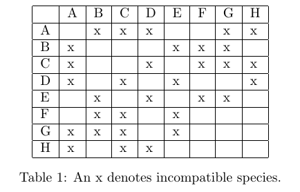
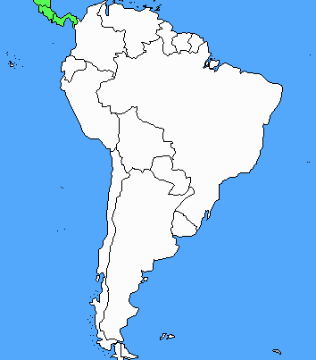
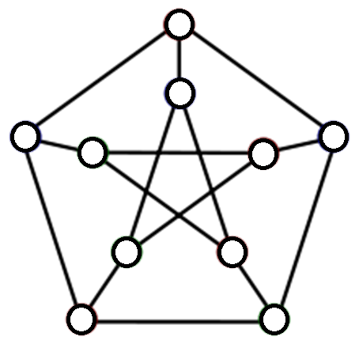
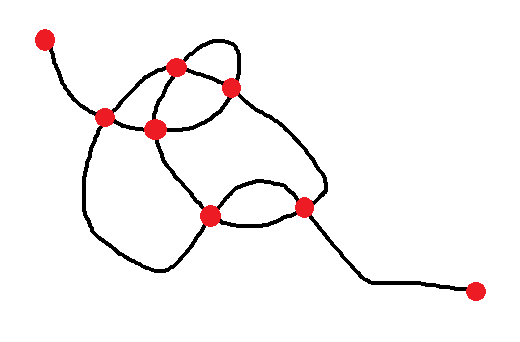

You have been hired to work at a pet store opening at a new shopping mall.
The store sells fish, but they cannot all be placed in a single tank because some species of fish attack other species.
You are concerned with the eight species (A-H) with conflicts shown in the table below.
What is the smallest number of tanks that can be used to display the fish, so that different species occupying the same tank will not attack each other?
Be sure to include your reasoning with your answer.

How many colors do you need to color a map of South America?

The math department at a small college plans to schedule final exams.
The class rosters for all the upper level math courses are listed below.
Find an exam schedule that minimizes the number of time periods used.
| Course | Students | |||
|---|---|---|---|---|
| math 350 | Jimi | BB | Eric | |
| math 365 | Ry | Jimmy P. | Carlos | |
| math 385 | Jimi | Chrissie | Bonnie | Brian |
| math 420 | Bonnie | Robin | Carlos | |
| math 430 | Ry | BB | Buddy | Robin |
| math 445 | Brian | Buddy | ||
| math 460 | Jimi | Ry | Brian | Mark |
What is the chromatic number of the Petersen graph below.
The chromatic number of a graph is the minimum number of colors required to color each vertex so that incident vertices do not share a color.

Try doodling a simple curve that crosses itself a few times.
Can you determine a relationship between the number of intersection points, (V), the number of edges or segements connecting points, E, and the number of regions created (including the outside), F?

Sometimes people just don’t get along, and you are caught in the middle. Imagine that you are a wedding planner organizing the rehearsal dinner before a big wedding. There are a total of 16 people attending the rehearsal dinner: A, B, C, ..., H are relatives of the bride and groom; I, J, K, Á P are members of the wedding party. If things weren’t stressful enough, you are told that some of these people have serious issues: